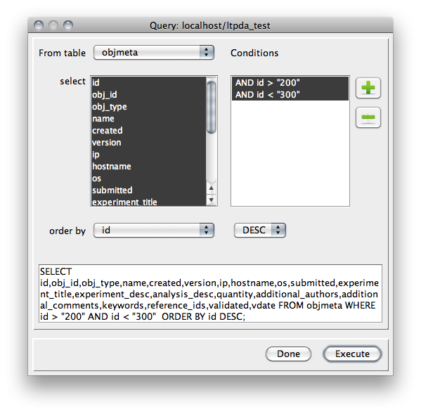

| LTPDA Toolbox™ | contents | |
Exploring an LTPDA repository is most easily achieved using the purpose-built graphical user interface. This interface is accessible by typing:
>> LTPDARepositoryQuery
The figure belows shows the query dialog that appears through either interface:

You can construct a query by use of the drop-down menus and buttons, then execute
the query to retreive a table of results, like the one shown below:

If the query dialog is launched from within the LTPDA Workbench, the results table has an additional button which can be used to create constructor blocks on the current pipeline corresponding to the selected records in the results table.
| |
Submitting LTPDA objects to a repository | Retrieving LTPDA objects from a repository | |
©LTP Team